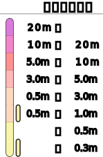

tsunami
今後の情報に注意
レイヤーの切り替え
close
ベースマップ
地球 球体表示
標準地図
地理院地図 (標準)
地理院地図 (淡色)
地理院地図 (写真)
Open Street Map
オーバーレイ
詳細地図 (地名・道路等)
陰影起伏図
火山基本図データ
津波浸水想定 ハザードマップ
土砂災害警戒区域(急傾斜地の崩壊) ハザードマップ
土砂災害警戒区域(地すべり) ハザードマップ
避難所（地震/津波）

keyboard_double_arrow_down
スクロールして詳細を表示
受信した情報：
緊急地震速報
震度速報
震源に関する情報
震源・震度情報
遠地地震に関する情報
顕著な地震の震源要素更新のお知らせ
長周期地震動に関する観測情報
推計震度分布
津波情報 震源
緊急地震速報による速報値
震源要素など
発生時刻
不明
最大震度
不明
マグニチュード
不明
深さ
不明
震源
不明
open_in_new
緊急地震速報の内容
付加文
情報がありません
エリアの揺れ
unfold_more
各地の震度
unfold_less
情報がありません
unfold_more
各地の長周期地震動階級
unfold_less
情報がありません
情報がキャンセルされました